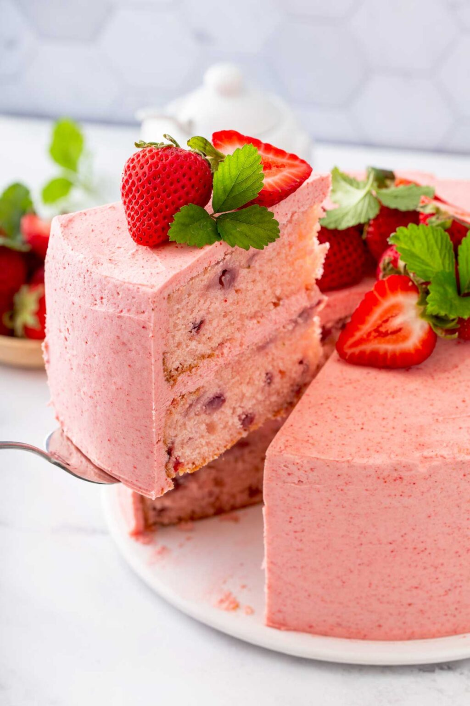

Strawberry Cake

A new favorite is this amazing strawberry cake recipe.
This cake is a pretty pink and an amazing soft center. Get ready for your new
favorite treat!With everything you love and nothing that you don't
Ingredients
For Cake
- 3 1/4 cups of flour
- 4 tsp baking powder
- 1 tsp salt
- 1 cup unsalted butter(room temperature)
- 2 cups sugar
- 1 1/2 tsp of vanilla extract
- pink food coloring
- 9 tbsp of just egg
- 1 large egg white
- 1 cup of milk
- 2 cups of finely chopped strawberries
For Butter Cream Frosting
- 1 cup heavy cream
- creame cheese
- 3/12-4 cups powdered sugar
- 2 tsp vanilla extract
- 1 1/2 cup freeze-dried strawberries
Steps:
For Cake
- Preheat the oven to 350 degrees Fahrenheit.
Grease and flour two 8" or 9" round cake pans.
- Whisk together the flour, baking powder,
and salt in a medium mixing bowl. Set aside
- Using a handheld or stand mixer fitted
with the paddle attachment, beat the butter,
sugar and vanilla together on medium-high speed
until smooth and pale (about 3 minutes).
Scrape down the sides and the bottom of the bowl
with a rubber spatula as needed.
Add the eggs and egg white one at a time,
allowing each to incorporate before adding the
next one Scrape down the sides of the bowl as needed.
- With the mixer on low speed, add about
half of the flour mixture, alternating with half the milk.
Add the remaining flour mixture and milk and mix to combine.
With the help of a spatula, gently fold in the strawberries
- Divide batter evenly between the two prepared cake pans.
Bake the cakes for about 40-44 minutes or until a toothpick
inserted in the center comes out clean and the tops are lightly browned.
Remove from the oven and place them on a wire rack.
Allow the to cool completely before assembling.
For Creame Cheese Frosting
-
With a food processor or a blender,
process the freeze-dried strawberries into a fine powder. Set aside.
- Using a clean bowl, beat the heavy cream on high speed until
stiff peaks form. Place bowl in the refrigerator to chill.
- In a separate bowl, beat the cream cheese,
powdered sugar and vanilla extract until smooth and well combined.
Slowly add the strawberry powder
- Fold 1/3 of the whipped cream into the frosting and gently stir until
well combined. Fold the remaining whipped cream into the cream cheese mixture;
gently stir until well combined.